<!doctype html>
<html lang="fr">
<head>
    <meta charset="utf-8" />
    <meta name="viewport" content="width=1920" />
    <meta name="apple-mobile-web-app-capable" content="yes" />
    <title>Webmardi - Talk - Perspective sur l'évolution d'internet</title>
    <meta name="author" content="Marc Friederich" />
    <!-- <link href="css/impress-demo.css" rel="stylesheet" /> -->
    <link href="css/style.css" rel="stylesheet" />
    <link href="css/impress-common.css" rel="stylesheet" />
    <style>
        section{
         display: flex;
         justify-content: center;
         align-content: center;
         flex-direction: column;
         text-align: center;
         gap: 2vh;
        }
        section.text-left{
            text-align: left;
            padding-left: 1em;
        }
        section img.cover{
            object-fit: cover;
            width: 100%;
            height: auto;
        }
        section img.contain{
            object-fit: contain;
            height:1080px;
            width:auto;
        }
        section img.half{
            object-fit: contain;
            height:500px;
            width:auto;
        }
        
        section {
            position: relative;
            width: 1920px;
            height: 1080px;
            margin: 20px auto;
            box-sizing: border-box;
        }

        .impress-enabled section {
            opacity: 0.15;
            /* transition: opacity 0.3s; */
        }
        .impress-enabled section.active { opacity: 1 }

    </style>
    
</head>
<body class="impress-not-supported">


<div id="impress"
    data-transition-duration="1000"
    data-width="1920"
    data-height="1080"
    data-max-scale="8"
    data-min-scale="0"
    data-perspective="1000"
    >

    <section id="bored" class="step slide" data-x="-1000" data-y="-1000" data-z="-1000" data-scale="1" data-rotate-z="180" data-rotate-y="-180" data-rotate-x="90">
        <div>
            <div class="lds-spinner"><div></div><div></div><div></div><div></div><div></div><div></div><div></div><div></div><div></div><div></div><div></div><div></div></div>
        </div>
        <aside class="notes">
            Just wait wait wait wait
        </aside>
    </section>
    <section id="title" class="step text-left" data-x="-3000" data-y="-1500" data-z="0" data-scale="1" data-rotate-z="90" data-rotate-y="-90" >
        <h2>🌐 Webmardi #152</h2>
        <h1>Perspectives sur&nbsp;l’évolution d’internet</h1>
        <h4>Marc Friederich</h4>
        <aside class="notes">
            > Bien expliciter le lien entre les phases, rappeler la période et le lien entre les éléments
            > 
            
        </aside>
    </section>
    <section id="disclaimer" class="step slide" data-rel-x="2200" data-rel-y="0"> 
        <h1>
            Disclaimer 👀
        </h1>
        <aside class="notes">
            <ul>
                <li>Ma perspective personnelle que je livre ici vient des recherches personnelles et de mon passif</li>
                <li>Nous allons se concentrer sur la période 1984->Aujourd'hui (on skip le début de l'informatique personnel)</li>
            </ul>   
        </aside>        
    </section>
    <section id="love-web" class="step slide" data-rel-x="2200" data-rel-y="0"> 
        <style>
            .human-heart {
              display: inline-block;
              animation: 2.1s infinite beatHeart;
            }
            
            @keyframes beatHeart {
              0% {
                transform: scale(1);
              }
              25% {
                transform: scale(1.1);
              }
              40% {
                transform: scale(1);
              }
              60% {
                transform: scale(1.1);
              }
              100% {
                transform: scale(1);
              }
            }
        </style>
        <h1>
            <span class="human-heart">💜</span>  the Web
        </h1>
        <aside class="notes">
            <ul>
                <li>
                    J’aime le web, vous vous souvenez ? Ça a été un de mes talk du webmardi il y a plusieurs années
                </li>
            </ul>   
        </aside>        
    </section>    
    <section id="love-web-tags" class="step slide" data-rel-x="0" data-rel-y="-400" data-rel-z="-1000"> 
        <ul class="tags">
            <li><a href="https://zufrieden.io/talking/2020_easy-as-the-web/">Simple</a></li>
            <li><a href="https://zufrieden.io/talking/2020_easy-as-the-web/">Accessible</a></li>
            <li><a href="https://zufrieden.io/talking/2020_easy-as-the-web/">Resilient</a></li>
            <li><a href="https://zufrieden.io/talking/2020_easy-as-the-web/">Fast</a></li>
            <li><a href="https://zufrieden.io/talking/2020_easy-as-the-web/">Distributed</a></li>
            <li><a href="https://zufrieden.io/talking/2020_easy-as-the-web/">Diverse</a></li>
            <li><a href="https://zufrieden.io/talking/2020_easy-as-the-web/">Empowering</a></li>
            <li><a href="https://zufrieden.io/talking/2020_easy-as-the-web/">Open</a></li>
            <li><a href="https://zufrieden.io/talking/2020_easy-as-the-web/">Evolving</a></li>
            <li><a href="https://zufrieden.io/talking/2020_easy-as-the-web/">Playful</a></li>
        </ul>
        <aside class="notes">
            <ul>
                <li>
                    Pas n'importe quel web, si jamais
                </li>
            </ul>   
        </aside>        
    </section>    
    <section id="whoami" class="step slide" data-rel-x="2500" data-rel-y="400" data-rel-z="1000"> 
        
        <h2>Marc Friederich </h2>
        <h4><a href="https://zufrieden.io">zufrieden.io</a></h4>
        <aside class="notes">
            <ul>
                <li>
                    Qui suis-je au fait
                </li>
            </ul>   
        </aside>
    </section>
    <section id="antistatique" class="step slide" data-rel-x="2500" data-rel-y="0" style="display: flex; align-items: center;"> 
        <div style="width:60%;height:60%;display: flex;flex-direction: column;justify-content: center; align-items: center; gap:5vh; background-color: #fff; border-radius: 8vh;">
         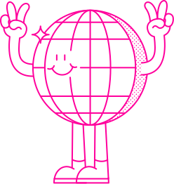
         
        </div>
        <aside class="notes">
            <ul>
                <li>
                    Agence web depuis 2008
                </li>
            </ul>   
        </aside>
    </section>
    
    <!-- <section id="pourquoi" class="step slide" data-rel-x="2200" data-rel-y="0">
        <h1>Pourquoi vous parler de&nbsp;tout&nbsp;de&nbsp;ça ?</h1>
        <aside class="notes">
            Y voit une suite logique<br/>
            pourquoi j'aime le web ?<br/>
            Comment faire sa veille, et prendre du recule sur le temps<br/>
            et maintenant quelle sont les perspectives ?
        </aside>
    </section> -->
    <section id="pourquoi_web_vie" class="step slide" data-rel-x="2500" data-rel-y="0" data-rel-z="0">
        <h1>Le Web a transformé <mark>nos vies</mark></h1>
        <aside class="notes">
            <ul>
                <li>Je m’intéresse à comment le web a transformé nos vies</li>
                <li>Je lis beaucoup depuis 5-6 ans sur ce sujet et ce talk c’est une manière pour moi de relier toutes ces sources et leur donner ma perspective.</li>
                <li>Je crois que j’’essaye de comprendre comment on a réussi à s’entendre pour réussir à se connecter</li>
                <li>Je ne comprend d’ailleurs toujours pas pourquoi je ne peux pas rejoindre un call Zoom avec Teams, c’est quand même dingue en 2024. C’est naïf Marc, une histoire de gros sous sans doute.</li>
            </ul>   
        </aside>
    </section>
    <section id="pourquoi_lecture" class="step slide" data-rel-x="2500" data-rel-y="0" data-rel-z="0">
        
        <aside class="notes">
        <h2>lectures autour du sujet</h2>
            <ul>
                <li>Je m’intéresse à comment le web a transformé nos vies</li>
                <li>Je lis beaucoup depuis 5-6 ans sur ce sujet et ce talk c’est une manière pour moi de relier toutes ces sources et leur donner ma perspective.</li>
                
            </ul>   
        </aside>
    </section>
    <section id="pourquoi_video_conferending" class="step slide" data-rel-x="2500" data-rel-y="0" data-rel-z="0">
        <h1>Comment internet est devenu <br/>le village global 🫶 ?</h1>
        <aside class="notes">
            <ul>
                <li>
                    Le partage des connaissances, le réseau où l'on peut se connecter avec le monde entier.
                </li>
                <li><strong>Structure du talk</strong>
                    <ul>
                        <li>Principes fondateurs</li>
                        <li>Périodes</li>
                        <li>La perspective que j'aimerai vous donner</li>
                    </ul>
                </li>
                
            </ul>   
        </aside>
    </section>
    
    <section id="moon" class="step slide" data-x="0" data-y="500" data-z="0" data-rotate-z="180" data-rotate-y="-180" style="background:url('p08530wr.jpg');background-size:cover;">
        <aside class="notes">
            <ul>
                <li>J'ai reçu cette photo de mon oncle</li>
                <li>Il travaillait chez Typon (pensez à Kodak)</li>
                <li>je lui ai dit : super, pourquoi tu me refile ce truc</li>
                <li>Il m'a dit : C'est impossible pour moi de me rendre compte, mais c'est la première fois qu'on avait une photo de la Terre entière dans la perception du MONDE</li>
                <li>C'est une révolution</li>
                <!-- <li>Cette photo, mon oncle l’a développé pour le compte d’une marque horlogère suisse connue. Il m’a donné ces originaux, “les négatifs que tu vois là, ils ont voyagé sur la lune, tu te rend compte”.</li>
                <li>1. Quand je lui demande pourquoi c’est important pour lui, il me dit que c’est impossible pour moi de me rendre compte à quel point cette période était une révolution</li>
                <li>2. Pourquoi on ne peut pas se rendre compte .. c’est vrai ça</li>
                <li>3. 1. Gain perspective - see the whole earth - nous on a l’habitude de la voir cette terre flotter dans l’espace.</li>
                <li>2. D’ailleurs cette photo, c’est un symbole, </li> -->
            </ul>
        </aside>
    </section>
    <section id="spacerace" class="step slide" data-rel-x="2000" data-rel-y="0" data-rel-rotate-z="180" data-rel-rotate-y="-180" >
        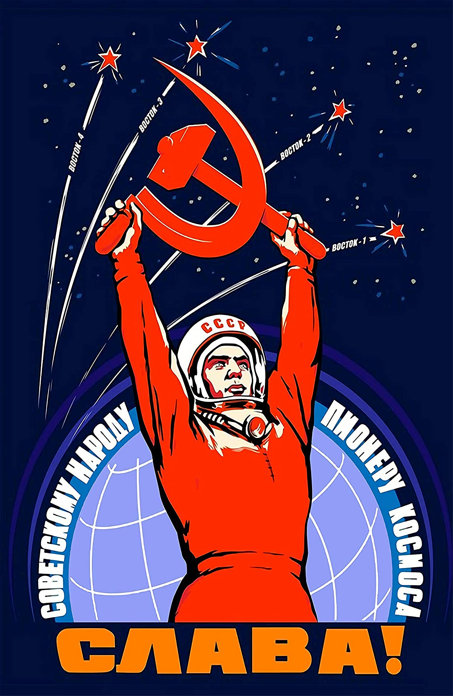
        <aside class="notes">
            Mais cette photo, elle est chargée de géopolitique, la course à l’espace de la guerre froide<br/>
            West centric<br/>
            <h1>L'histoire est écrite par les vainqueurs.</h1>
        </aside>
    </section>
    <!-- <section id="whowonthewar" class="step slide" data-rel-x="400" data-rel-y="800">
        <blockquote>
            <h1>L'histoire est écrite par les vainqueurs.</h1>
            
            <cite>
                Robert Brasillach, 1944
            </cite>
        </blockquote>
        <aside class="notes">
            On doit toujours bien se méfier de l'histoire ...
        </aside>
    </section> -->
    <!-- <section id="facettes" class="step slide" data-rel-x="400" data-rel-y="800">
        
        <style>
            
        </style>

        <div class="container">
          <div class="cube">
            <div class="face top face-active"><span class="cube-emoji">☮️</span>️<h3>Contre culture</h3></div>
            <div class="face bottom"><span class="cube-emoji">💻</span><h3>L'ordinateur personnel</h3></div>
            <div class="face left"><span class="cube-emoji">⚛️</span>️<h3>L'armée et la&nbsp;politique</h3></div>
            <div class="face right"><span class="cube-emoji">🛍</span>️<h3>Le marketing</h3></div>
            <div class="face front"><span class="cube-emoji">🏗</span>️<h3>L'infrastructure / le&nbsp;réseau</h3></div>
            <div class="face back"><span class="cube-emoji">🧑‍🚀</span><h3>Utilisateur·ices</h3></div>
          </div>
        </div>
        
        <h1>Les facettes d'Internet</h1>

        <aside class="notes">
            Prysm selon lequel on va regarder l'histoire d'internet ce soir<br/>
            Ces facteurs d'influence ont façonné le réseau et les jeux de pouvoir <br/>
            nous allons naviguer entre les différentes facettes. On commence par la contre-culture.<br/>
            On va y revenir
        </aside>
    </section> -->
    <section id="earthcatalog" class="step slide" data-rel-x="2500" data-rel-y="0">
        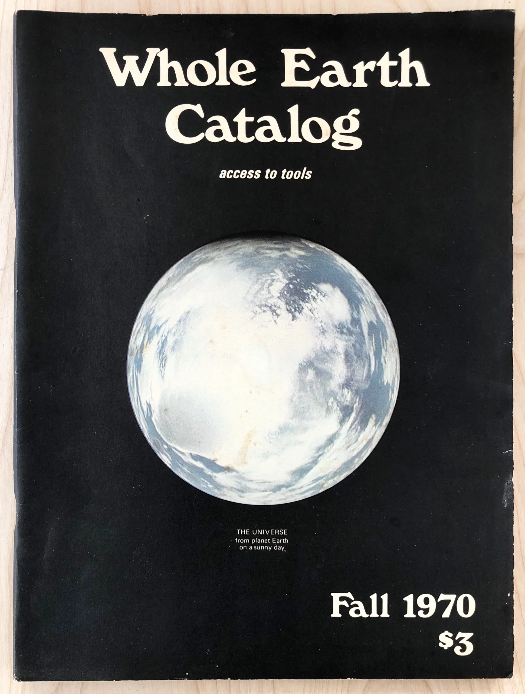
        <aside class="notes">
            Cette photo c’est aussi la cover du earth catalog vous avez déjà entendu parlé ?
        </aside>
    </section>
    <section id="premier-media-cyberculture" class="step slide text-left" data-rel-x="2800" data-rel-y="0">
        <h2>📍1968</h2>
        <h1>Whole Earth Catalog</h1>
        <!-- <h3>Une influence importante du web et de la contre-culture</h3> -->
        <aside class="notes">
        <h1>Manifestation de la contre-culture</h1>
        <h2>Période 1965 - Contestation anti-militariste, anti-autoritaire (Guerre du Vietnam, Mai 68)</h2>
        <h3>Ce média va influencer les visions de ce que doit devenir Internet, </h3>
            <h3> Media créé dans les communautés américaine, expérimentation de nouvelles sociétés, gouvernance partagée</h3>
        <h3>Décrit comme une sort de précurseur de google ou wikipedia (base de connaissances utile au vaisseau spacial TERRE), mais version papier</h3>
        <!-- <h3>Elle va influencer la silicon valley et tout les débuts de l'informatique personnel</h3>
        <h3>On cherche l'émancipation du monde militaire </h3> -->
        </aside>
    </section>
    <section id="hippies-key-dates" class="step slide text-left" data-rel-x="2500" data-rel-y="0" data-rotate-y="-120">
        <h1>
            La culture techno-utopiste d'Internet
        </h1>
        <h2>Mouvement de la contre-culture des années 60</h2>
        <aside class="notes">
            Today’s Internet, with its techno-utopian culture, connects with the 1960s counterculture movement.
        </aside>
    </section>
    <section id="open-source" class="step slide" data-rel-x="1500" data-rel-y="0" data-rotate-y="-120">
        <blockquote>
            <h1>Information wants to be free</h1>
            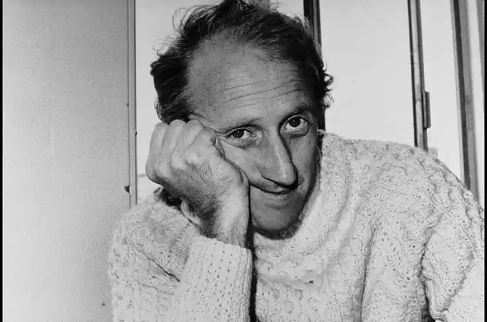
            <cite>
                Steward Brand<br/>
                <small>1984 – 1<sup>st</sup> Hackers Conference</small>
            </cite>
        </blockquote>
        <aside class="notes">
            <h2>Steward, participant important à la première conférence des Hackers</h2>
            <h2>Rédaction du premier manifest des Hackers</h2>
            <h2>L'information veut être libre, (pas gratuite), </h2>
            <h2>Ces personnes réunies, sont les pionniers de l'ordinateur personnel</h2>
            <h2>L'information et son partage, devient une raison d'être de leur invention</h2>
            <!-- En réalité, ce n'est pas tout à fait ce qu'il voulait dire.<br/>
            "Information wants to be free, because the cost of getting it out is getting lower and lower all the time."<br/>
            "Information wants to be free" > Figurait dans le earth catalog.<br/>
            Steward Brand
            Cette phrase est souvent attribuée à Steve Wozniak, il était là en 1984 à cette Hacker conference.<br/>
            Fondation de beaucoup d'idée et de concept<br/>
            Hyper critiqué par ceux qui se finance sur le contenu. Je vous propose 2 digressions : accepter les contradictions et la notion de tragedie des communs.<br/>
            <small>In a 1984 Hackers’ Conference, Brand told Steve Wozniak, a founder of Apple Inc., "Information wants to be free, because the cost of getting it out is getting lower and lower all the time." This phrase, "Information wants to free," came to mean people should be able to access information freely. It has become an ideology of many technology activists who criticize any restriction to open and free access to information. Completely forgotten today is the fact that this phrase is taken out of context; the preceding sentence by Brand was "Information wants to be expensive, because it’s so valuable." Of course, information does not want anything. It is people who want information to be free, but "Information wants to be free" meshed well with the antiestablishment character of the techno-utopianism. When the Internet and the World-Wide Web grew explosively in the early 1990s, information freedom became a mantra.</small> -->
        </aside>
    </section>
    <section id="digression-contradiction-militaire-hippies" class="step slide" data-rel-x="1500" data-rel-y="0" data-rotate-y="-120" style="background:url('Vietnamdem.jpg');background-size:cover;justify-content: flex-start;">
            <h2><br/>Internet was created by hippies<br/>while being funded by the military!</h2>
            <aside class="notes">
                <h2>il y a comme un truc pas logique là dedans</h2>
                <h3>Mais c'est pourtant cette dynamique qui renforce la volonté de contribuer pour imposer plus son idéologie</h3>
            </aside>
    </section>    
    <section id="digression-contradiction" class="step slide text-left" data-rel-x="1500" data-rel-y="0" data-rotate-y="-120">
        <blockquote>
            <h1>Toutes choses sont mutuellement contraires.</h1>
            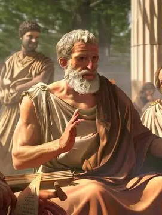
            <cite>
                Héraclite,  500 av. J.-C
            </cite>
        </blockquote>
        <aside class="notes">
            <h3>La contradiction a quelque chose d’embarrassant, de dérangeant, pour les Occidentaux que nous sommes. Elle est contraire à la logique que nous apprenons tous depuis le berceau, celle d’Aristote et son principe de non-contradiction qui stipule que A et non-A ne peuvent être vrais en même temps. </h3>
            <h1>Si vous tombez sur une contradiction, c’est que vous faites erreur, il faut faire marche arrière. Le cours du développement technique et scientifique a donné le primat à cette pensée binaire, en reléguant la pensée des contradictions dans les marges.</h1>
            <h3>Pourtant, dès que je réfléchis à tous les grands problèmes, je tombe sur des contradictions : c’est bien qu’elles touchent une forme de vérité. Un fragment d’Héraclite me semble être par exemple le cœur de toute anthropologie : “Éveillés, ils dorment.”</h3>
        </aside>
    </section>
    <section id="digression-tragedy-commons" class="step slide text-left" data-rel-x="1500" data-rel-y="0" data-rotate-y="-120">
        <blockquote>
            <h1>The conflict between individual and collective rationality</h1>
            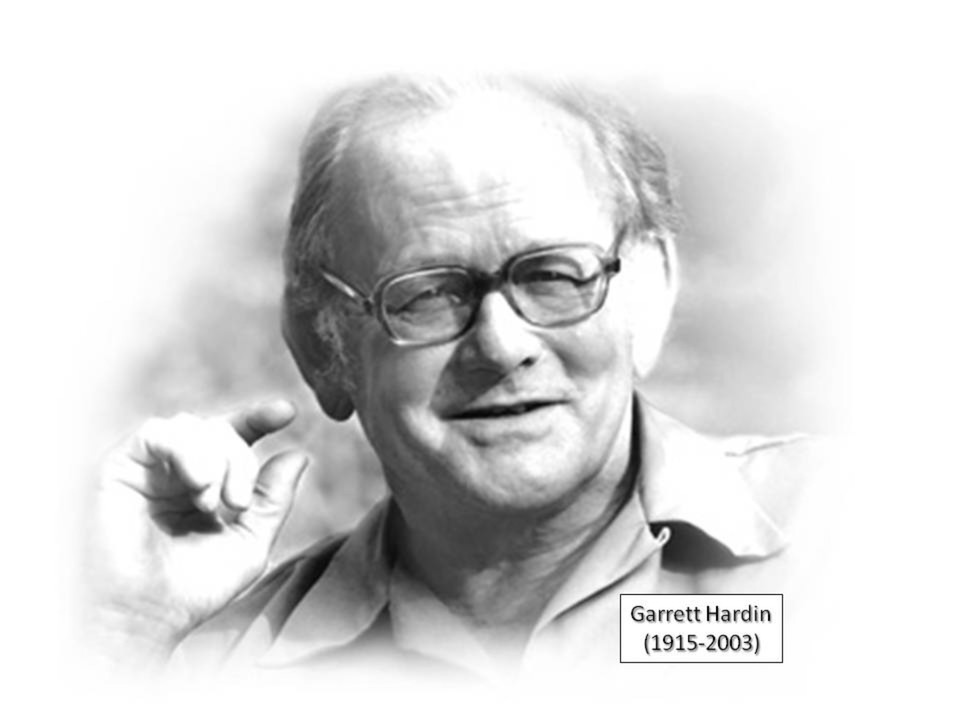
            <cite>
                Garrett Hardin, 1915-2003
            </cite>
        </blockquote>
        <aside class="notes">
            une autre contradiction, la tragedie des commun<br/>
            Internet et l'information sont des bien communs, libres <br/>
            Comment on se partage et on garanti que tout le monde y a accés<br/>
            Certain économise, Garrett par exemple<br/>
            Dit que nous ne sommes pas capable de les exploiter sans que l'individualisme prime.<br/>
            <p>Tragedy of the commons</p>
            <p>The conflict between individual and collective rationality</p>
            <p>Garrett Hardin</p>
            https://en.wikipedia.org/wiki/Tragedy_of_the_commons
            <p>Cité dans énormément de publication pour justifier le fait que l'on est incapable de s'organiser pour partager des bien commun sans les sur-exploiter vs donner le mandat à une entreprise de l'exploiter (genre les poissons d'un lac par exemple)</p>
        </aside>
    </section>
    <section id="digression-tragedy-commons-elinor-ostrom" class="step slide text-left" data-rel-x="1500" data-rel-y="0" data-rotate-y="-120">
        <blockquote>
            <h1>Avoid the tragedy, by governing the Commons.</h1>
            
            <cite>
                Elinor Claire "Lin" Ostrom - 1933-2012
            </cite>
        </blockquote>
        <aside class="notes">
             https://en.wikipedia.org/wiki/Elinor_Ostrom
            <h2>Prix Nobel</h2>
            <h1>Des décénies de recherche sur le partage de bien commun</h1>
        </aside>
    </section>
    <section id="digression-digital-tragedy-commons" class="step slide" data-rel-x="1500" data-rel-y="0" data-rotate-y="-120">
        <h1>Tragedy of the digital commons</h1>
        <h2>Exemple wikipedia</h2>
        <aside class="notes">
            <h2>Wikipedia, comment maintenir en ligne, une ressources gratuite</h2>
            <!-- https://en.wikipedia.org/wiki/Tragedy_of_the_commons
            
            Tragedy of the digital commons
            In the past two decades, scholars have been attempting to apply the concept of the tragedy of the commons to the digital environment. However, between scholars there are differences on some very basic notions inherent to the tragedy of the commons: the idea of finite resources and the extent of pollution.[20] On the other hand, there seems to be some agreement on the role of the digital divide and how to solve a potential tragedy of the digital commons.[20]
            
            Resources
            Many digital resources have properties that make them vulnerable to the tragedy of the commons, including data,[46] virtual artifacts[47] and even limited user attention.[48] Closely related are the physical computational resources, such as CPU, RAM, and network bandwidth, that digital communities on shared servers rely upon and govern.[49] Some scholars argue that digital resources are infinite, and therefore immune to the tragedy of the commons, because downloading a file does not constitute the destruction of the file in the digital environment,[50] and because it can be replicated and disseminated throughout the digital environment.[51] However, it can still be considered a finite resource within the context of privacy laws and regulations that limit access to it.[52]
            
            Finite digital resources can thus be digital commons. An example is a database that requires persistent maintenance, such as Wikipedia. As a non-profit, it survives on a network of people contributing to maintain a knowledge base without expectation of direct compensation. This digital resource will deplete as Wikipedia may only survive if it is contributed to and used as a commons. The motivation for individuals to contribute is reflective of the theory because, if humans act in their own immediate interest and no longer participate, then the resource becomes misinformed or depleted. Arguments surrounding the regulation and mitigation requirements for digital resources may become reflective of natural resources.[53][54]
            
            This raises the question whether one can view access itself as a finite resource in the context of a digital environment. Some scholars argue this point, often pointing to a proxy for access that is more concrete and measurable.[55] One such proxy is bandwidth, which can become congested when too many people try to access the digital environment.[51][56] Alternatively, one can think of the network itself as a common resource which can be exhausted through overuse.[57] Therefore, when talking about resources running out in a digital environment, it could be more useful to think in terms of the access to the digital environment being restricted in some way; this is called information entropy.[58] -->
        </aside>
    </section>
    <!-- <section id="digression-digital-tragedy-commons-infrastructure" class="step slide" data-rel-x="1500" data-rel-y="0" data-rotate-y="-120" style="background:url('sea_cables.jpg');background-size:cover;">
        <h1>Internet c'est quoi ?</h1>
        <aside class="notes">
            Photo credit : https://www.flickr.com/photos/ctbto/3816716741/
        </aside>
    </section> 
    <section id="digression-digital-tragedy-commons-infrastructure-map" class="step slide" data-rel-x="1500" data-rel-y="0" data-rotate-y="-120" style="background:url('internet-undersea-world.original.png');background-size:cover;border:30px solid white;">
        <aside class="notes">
            <h2>Et ça ce n'est que la partie des océans</h2>
            https://theodi.org/news-and-events/blog/from-cyber-to-physical-space-the-concentration-of-digital-and-data-power-by-tech-companies/
        </aside>
    </section>     -->
    <section id="cyberspace-become-internet" class="step slide text-left" data-x="0" data-y="3000" data-z="0" data-rotate-z="180" data-rotate-y="-180">
        <h2>📍1984 — 1994</h2>
        <h1>Le cyberspace devient web</h1>
        <h3></h3>
        <aside class="notes">
            
        <h2>On revient à la définition de ce nouvel espace</h2>
        <h3>En 1984, arrêt définitif des connexion avec l'ancètre Arapanet, développé par l'armée américaine pour "provide a reliable and decentralized communication network that could withstand a nuclear attack"</h3>
        <h3>NSFNet</h3>
        <h2>La science-fiction décrit une univers ou les corps est absent</h2>
        <h3>Ce média va influencer les vision du cyberespace</h3>
        <h2>PAUSE --> Qui s'est connecté au réseau à ce moment là ?</h2>
        </aside>
    </section>
    <section id="cyberspace-" class="step slide" data-rel-x="1500" data-rel-y="0" data-rotate-y="-120">
        <div class="gallery">
            <div class="item">
                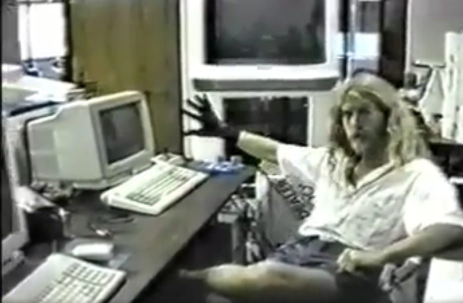
            </div>
            <div class="item">
                
            </div>
            <div class="item">
                
            </div>
            <div class="item">
                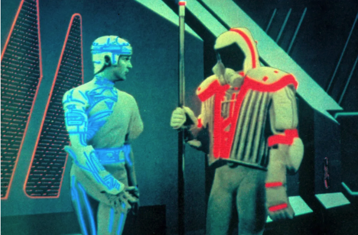
            </div>
            <div class="item">
                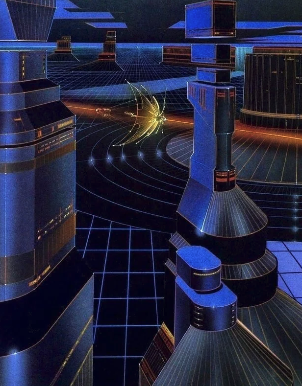
            </div>
            <div class="item">
                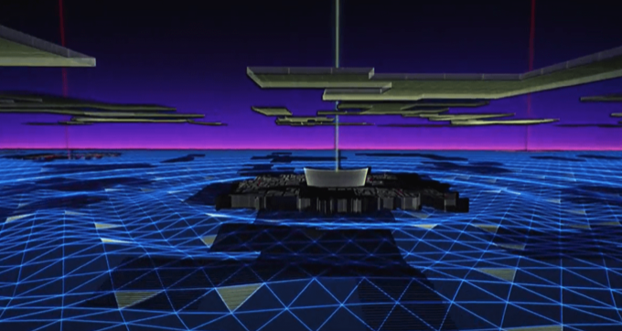
            </div>
        </div>
        <aside class="notes">
            Notre vision de ce cyberspace<br/>
            À ce moment là, le cinéma et l'avancée des technologies façonnes notre vision de ce que sera cet espace d'échange. -> Et ça n'aide pas à le faire décoller ou comprendre<br/>
            C'est trop futuriste<br/>
            
            https://www.youtube.com/watch?v=Qu5_33uRNzc
        </aside>
    </section> 
    <section id="superhighway" class="step slide" data-rel-x="1500" data-rel-y="0" data-rotate-y="-120">
        <blockquote>
        <h1>We have a dream for … an <mark>information superhighway</mark> that can save lives …</h1>
        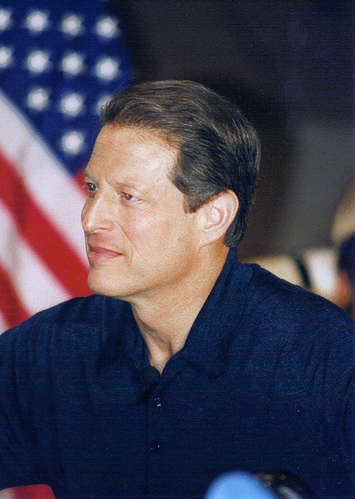
        <cite>
            Al Gore, 1994
        </cite>
        </blockquote>
        <aside class="notes">
            À ce moment là, Internet c'est TCP/IP qui vient à peine d'être défini.<br/>
            On peut s'envoyer des mails et discuter.<br/>
            Vient alors le terme de l'autoroute de l'information.<br/>
            
            Information superhighway
            https://polisci.ucla.edu/2016/01/12/al-gore-invents-the-internet-this-week-in-tech-history/
        </aside>
    </section> 
    <section id="bigvillage" class="step slide" data-rel-x="1500" data-rel-y="0" data-rotate-y="-120">
        <blockquote>
        <h1>The emergence of the <mark>global village</mark> would dramatically change human behavior.</h1>
        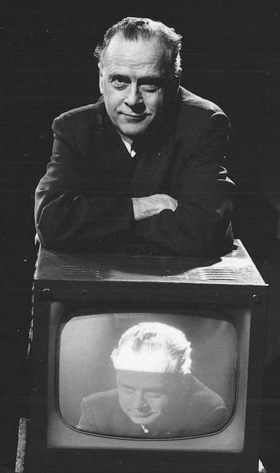
        <cite>
            Marshall McLuhan, 1911 – 1990
        </cite>
        </blockquote>
        <aside class="notes">
            The rise of electronic media, the information system would become global, putting people in contact with information from everywhere. McLuhan believed that the emergence of the global village would dramatically change human behavior.
        </aside>
    </section> 
    <section id="timtim" class="step slide" data-rel-x="1500" data-rel-y="0" data-rotate-y="-120" style="background:url('Screenshot-World-Wide-Web-project-small.png');background-size:cover;border:30px solid black;">
        <aside class="notes">
            voilà ce qui va cristaliser finalement le concept de global village<br/>
            C'est le projet qui a gagné (Face à AOL, CompuServe, etc.)<br/>
            Il est libre et open source<br/>
            Libéré des contraintes mercantiles et répond vraiment à ce besoin de réseau sans gouvernance centrale
        </aside>
    </section>
    <section id="web_first" class="step slide" data-rel-x="1500" data-rel-y="0" data-rotate-y="-120" style="background:url('timeline_networking_1990.mosaic-www-browser-editor.jpg');background-size:cover;">
        <aside class="notes">
            
        </aside>
    </section>
    <!-- <section id="abstraction" class="step slide" data-rel-x="1500" data-rel-y="0" data-rotate-y="-120">
        
        <aside class="notes">
            la technologie est une multitude de couches d'abstraction
        </aside>
    </section>
    <section id="network_layer" class="step slide" data-rel-x="1500" data-rel-y="0" data-rotate-y="-120">
        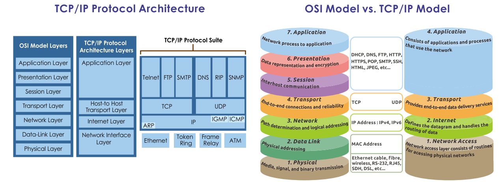
        <aside class="notes">
            finalement, nous allons pouvoir naviguer à travers la connaissance, dans la couche applicative
        </aside>
    </section> -->


    <section id="web-marchant" class="step slide text-left" data-x="0" data-y="5000" data-z="0" data-rotate-z="180" data-rotate-y="-180">
        <h2>📍1994 — 2001</h2>
        <h1>Le cyberspace devient web</h1>
        <h3>La confiance avec ou sans identité</h3>
        <aside class="notes">

            Avant l'explosion de la bulle, le réseau se cherche une identité, une raison d'être.
            <h2>PAUSE --> Qui s'est connecté au réseau à ce moment là ?</h2>
        </aside>
    </section>
    <section id="hors-du-corps" class="step slide" data-rel-x="2500" data-rel-y="0" data-rotate-y="-120" style="background:url('hackers.jpeg');background-size:cover;">
        <aside class="notes">
        Le cyberespace n'est pas le domaine du corps<br/>
        Nos identités n'ont pas de corps
        </aside>
    </section>
    <section id="sans-corps-sans-contraite" class="step slide" data-rel-x="2500" data-rel-y="0" data-rotate-y="-120" style="background:url('matrix.jpg');background-size:cover;">
        <aside class="notes">
        Nouvelle économie libérée de la matière<br/>
        
        Chacun a désormais les moyens de publier, apanage jadis des puissants: les conglomérats industriels vont tomber, et la nature ne s'en portera que mieux.
        </aside>
    </section>
    <section id="eff" class="step slide" data-rel-x="2500" data-rel-y="0" data-rotate-y="-120" >
        <blockquote>
            <h2>We will create a civilization of the Mind in Cyberspace. May it be more humane and fair than the world your governments have made before.</h2>
            
            <cite>
                EFF - John Perry Barlow <br/>
                A Declaration of the Independence of Cyberspace - Davos - 1996
            </cite>
        </blockquote>
        <aside class="notes">
        JOHN PERRY BARLOW
        A Declaration of the Independence of Cyberspace
        </aside>
    </section>
    <section id="anonymat" class="step slide" data-rel-x="2500" data-rel-y="0" data-rotate-y="-120">
        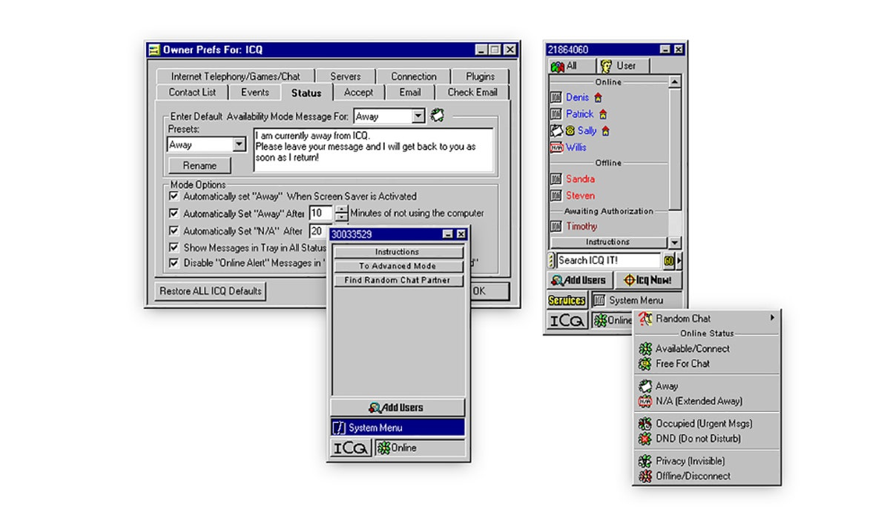
        <aside class="notes">
        La puissance de l'anonymat<br/>
        On croit à ce moment avoir enlevé toute barrière et discrimination.<br/>
        Je me connectais via ICQ par exemple 
        </aside>
    </section>
    <section id="code-is-law" class="step slide" data-rel-x="2500" data-rel-y="0" data-rotate-y="-120">
        <blockquote>
            <h1>"Code is law"</h1>
            
            <cite>
                Code and Other Laws of Cyberspace<br/>                
                Lawrence Lessig, 1999
            </cite>
        </blockquote>
        <aside class="notes">
        Le code, c'est la loi. Ainsi le code est l'élément de confiance.<br/>
        Cela fonctionne que dans le cas ou le code est compris par les personnes<br/>
    > On retrouve cette notion avec les crypto. On fait confiance à l'algo. et du coup on peut échanger avec d'autres anonymes<br/>
        <!-- Sur cette photo, Lawrence est à droite.<br/>
        Qui est ce garçon à gauche ? Aaron Swartz à la fête de lancement des Creative Commons -->
        </aside>
    </section>
    <!-- <section id="code-is-law-but-when-nobody-get-the-code" class="step slide" data-rel-x="2500" data-rel-y="0" data-rotate-y="-120">
        <h1>A <mark>person</mark> became a <mark>user</mark></h1>
        <aside class="notes">
            D'un endroit qui protège l'anonymat, la liberté de parole, l'autonomie des individus, il va devenir un endroit qui rend l'anonymat difficile, l'expression moins libre, où seuls certains experts auront encore le contrôle de leur individualité».<br/>
            
            ... des nouveaux utilisateur·trices ne connaissent ni ne comprennent le code ...
        </aside>
    </section> -->
    <section id="code-is-law-but-when-nobody-get-the-code-follow" class="step slide" data-rel-x="2500" data-rel-y="0" data-rotate-y="-120">
        <!--  -->
        <!-- <h1>Code is law</h1> -->
        <h1>Not everybody <br/>understand the code</h1>
        <aside class="notes">
            D'un endroit qui protège l'anonymat, la liberté de parole, l'autonomie des individus, il va devenir un endroit qui rend l'anonymat difficile, l'expression moins libre, où seuls certains experts auront encore le contrôle de leur individualité».<br/>
            
            ... des nouveaux utilisateur·trices ne connaissent ni ne comprennent le code ...
        </aside>
    </section>
    <section id="marketing-coming" class="step slide" data-rel-x="2500" data-rel-y="0" data-rotate-y="-120">
        
        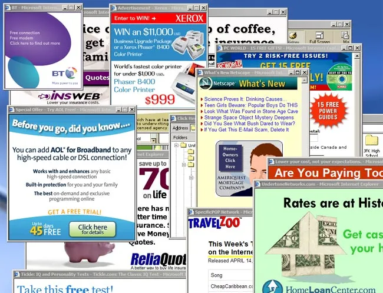
        <aside class="notes">
            Plus de personnes = un marché<br/>
            Le monde du marketing arrive
            <!-- @TODO : Ajouter une slide POPUP avec la prise de pouvoir du marketing -->
        
        </aside>
    </section>
    
    
    <section id="utopie-cyberspace" class="step slide" data-rel-x="2500" data-rel-y="0" data-rotate-y="-120">
        <ul class="tags">
            <li><a href="https://zufrieden.io/talking/2020_easy-as-the-web/">Business model</a></li>
            <li><a href="https://zufrieden.io/talking/2020_easy-as-the-web/">Money transfer</a></li>
            <li><a href="https://zufrieden.io/talking/2020_easy-as-the-web/">Trust</a></li>
        </ul>
        <aside class="notes">
            
        <p>Cette <strong>confiance est portée par des attributs d'identité</strong> - réputation, âge, possession d'un compte bancaire - qui sont certifiés par des intermédiaires de confiance. <strong>La manière dont le web considère ce vecteur de confiance qu'est l'identité est donc primordiale</strong>. Comment porter une identité dans un univers virtuel?<br/></p>
        
        
        <p>L'avertissement de Code is Law demeure sans effet: l'explosion de la bulle internet en 2001 n'entame aucunement l'idéologie dominante dans le cyberespace selon laquelle la <strong>régulation est à proscrire</strong>. Les systèmes d'identité vont se développer selon la loi des développeurs et du marché.<br/></p>
        
        <p>Entre l'émancipation d'internet à la fin des années 1980 et l'inflation de la bulle, les techno-utopistes ont positionné le réseau pour en faire une économie à part entière, une économie mondialisée et presque immune au pouvoir législatif. Mais trois éléments lui manquent encore pour qu'il devienne
        une force économique majeur pour la société (mode de paiement, modèle économique et confiance)</p>
        
        </aside>
    </section>
    <section id="dotcom-bubble" class="step slide" data-rel-x="2500" data-rel-y="0" data-rotate-y="-120" style="background:url('bubble_2001.png');background-size:cover;">
        <aside class="notes">
            La création de la bulle est très liée aux décision politiques (dont Al Gore est un des architectes). Avec The Telecommunications Act (deregulated cable and phone services)<br/>
            La bulle internet connaît son apogée au mois de mars 2000. Son éclatement aurait pu marquer la fin du rêve de cette nouvelle économie vouée à avaler l'ancien monde; en réalité, il est surtout un assainissement de l'écosystème.
        </aside>
    </section>
    <section id="dotcom-bubble-crash" class="step slide" data-rel-x="2500" data-rel-y="0" data-rotate-y="-120" style="background:url('US_VC_funding.png');background-size:contain;background-repeat: no-repeat;background-position: 50% 50%; ">
        <aside class="notes">
        le crash est énorme .... mais impossible de revenir en arrière, l'infrastructure est là. <br/>
        Le cadre légal, l'intérêt.<br/>
        On a une courbe similaire aujourd'hui avec l'intelligence artificielle.<br/>
        Nous sommes en train de nous approcher de l'explosion de la bulle de l'IA. avec les même questions :<br/>
        Est-ce que le coût n'est pas trop élevé par rapport au bénéfice ?<br/>
        En a-t-on vraiment besoin ?<br/>

        </aside>
    </section>
    
    
    
    
    
    <section id="web-social" class="step slide text-left" data-x="0" data-y="7000" data-z="0" data-rotate-z="180" data-rotate-y="-180">
        <h2>📍2002 — 2019</h2>
        <h1>Le réseau mondialisé</h1>
        <h3>Culture, économie et société</h3>
        <aside class="notes">
            De Netscape à Paypal, de Google à Facebook, comment les technologies mises en place par deux générations d'entrepreneurs et d'investisseurs en sont venues à définir la culture, l'économie et la société en 2020.
            <h2>PAUSE --> Qui s'est connecté au réseau à ce moment là ?</h2>
        </aside>
    </section>
    
    <section id="arthur-c-clarke" class="step slide" data-rel-x="2500" data-rel-y="0">
        <blockquote>
            <h2 style="text-align: right;">Contrairement à une idée répandue, les écrivains de science-fiction essaient rarement de prédire le futur. La plupart du temps, ils tentent de l'empêcher de se produire.</h2>
            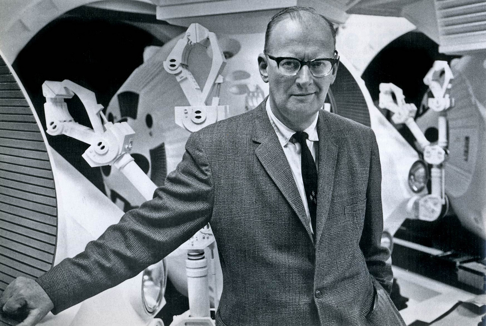
            <cite>
                Arthur C. Clarke, 2001<br/>
                  L'Odyssée de L'Espace, 1968
            </cite>
        </blockquote>
        <aside class="notes">
            Toute cette science fiction, ce n'est pas pour nous y projeter, mais pour éviter d'y aller   
        </aside>
    </section>
    
    <section id="nsa" class="step slide" data-rel-x="2500" data-rel-y="0" style="background:url('Onyx_20100819_MartinSteiger_CCBYSA_001.jpg');background-size:cover;">
        <h1><mark>Surveillance</mark></h1>
        <aside class="notes">
            Surveiller l'ensemble des communications.<br/>
            <!-- espionage - slides echelon -->
        </aside>
    </section>
    
    <section id="doubleclick" class="step slide" data-rel-x="2500" data-rel-y="0">
        <h1>Surveillance capitalism 🤑</h1>
        <h1>Data <s>privacy<s></h1>
        <aside class="notes">
            Après l'internet des données personnelles, les métiers des affaires se raccordent au réseau: déclarations fiscales, automatisation des contrats et de la loi, finance et paiements, diagnostics médicaux: toutes les données internes produites par les entreprises viennent étendre de manière invisible le domaine du réseau.
            
            
            Si internet devient invisible, ses hôtes, eux, sont à tout moment observés, avec toujours plus de finesse. L'ancrage d'internet dans le monde réel lui permettra de toujours mieux décrypter les comportements des utilisateurs et les pensées qu'ils expriment, sur les plateformes et en dehors, par leurs actions. Dans la vision cybernétique d'un monde chaotique qu'il faut coûte que coûte réguler, l'influence pernicieuse des suggestions, recommandations et, de plus en plus, créations des IA pourront contribuer à ce contrôle qu'il convient d'exercer.
            
        </aside>
    </section>

    <section id="principe-geneve" class="step slide" data-rel-x="2500" data-rel-y="0">
        <blockquote>
            <h2>Promouvoir l'élaboration et l'utilisation de normes ouvertes, interopérables et non discriminatoires </h2>
            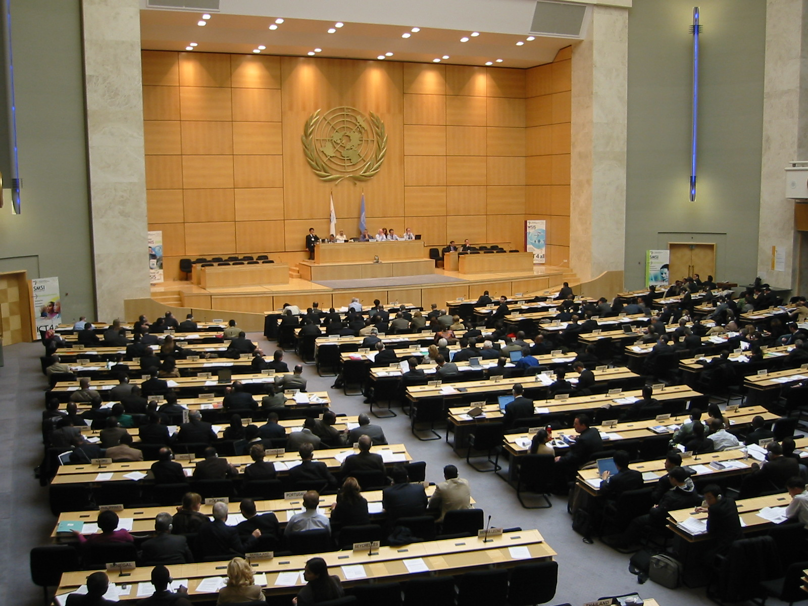
            <cite>
                Déclaration des principes de Genève<br/>
                Construire la société de l'information : Un défi mondial pour le nouveau millénaire.
            </cite>
        </blockquote>
        <aside class="notes">
            https://www.itu.int/net/wsis/docs/geneva/official/dop-fr.html
        </aside>
    </section>
    
    
    <section id="internet-usage" class="step slide" data-rel-x="2500" data-rel-y="0">
        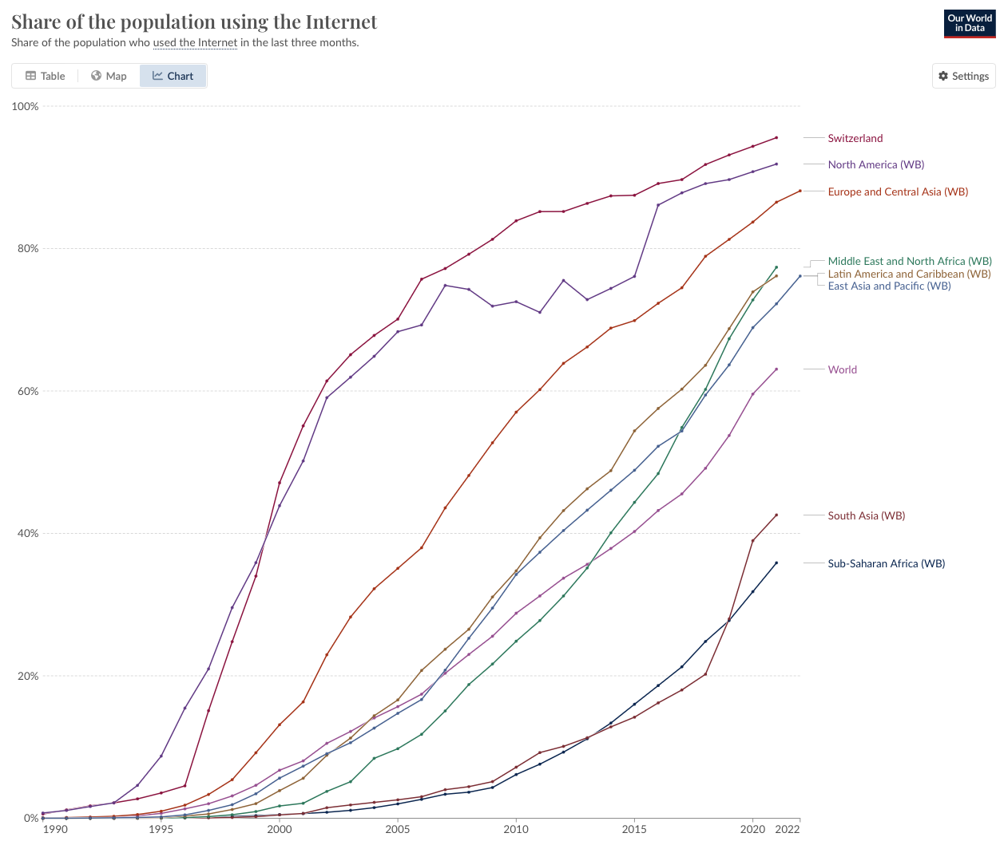
        <aside class="notes">
            https://ourworldindata.org/grapher/share-of-individuals-using-the-internet?time=earliest..2022&facet=none&country=South+Asia+%28WB%29~North+America+%28WB%29~Sub-Saharan+Africa+%28WB%29~East+Asia+and+Pacific+%28WB%29~Middle+East+and+North+Africa+%28WB%29~Europe+and+Central+Asia+%28WB%29~Latin+America+and+Caribbean+%28WB%29~OWID_WRL~CHE
        </aside>
    </section>
    
    <section id="facebook" class="step slide" data-rel-x="2500" data-rel-y="0">
        
        <aside class="notes">
            L'arrivée du web2.0<br/>
            Encore plus de monde ! Une nouvelle raison de vivre, qui se rapproche du cyberespace ...<br/>
            Le village mondiale serait en fait un centre commercial ? Un espace publicitaire ?
        </aside>
    </section>
  
  <section id="iot-internet-smart-toaster" class="step slide" data-rel-x="2500" data-rel-y="0">
        
        <aside class="notes">
            
      Pour continuer sa croissance, pour continuer sa <strong>colonisation du réel</strong>, internet doit étendre son emprise au royaume physique des industries purement matérielles: à la logistique, à la livraison de marchandises par drones, à la conduite autonome des camions et des taxis, à l'optimisation des flux urbains dans les métropoles. Ce qui signifie qu'internet a besoin d'incorporer le monde entier dans sa vision cybernétique. Si le smartphone a été la clé pour faire de l'humain une créature cybernétique dont les émotions peuvent être collectées, anticipées et donc contrôlées par le réseau, les capteurs - caméras, GPS, thermomètres, transducteurs connectés de tous types - associés aux IA permettront à Internet d'interpréter le réel, de le fusionner au cyberespace virtuel, d'étendre son emprise sur le monde physique. Ce qui a été pudiquement appelé « internet des objets» (internet of things, abrégé IoT).
        Les objets ne sont pas recréés dans ce cybe-respace promis par les visionnaires du web: ils deviennent simplement connectés. Les interfaces disparaissent:
        
        
        </aside>
    </section>
  
    <section id="iot-internet" class="step slide" data-rel-x="2500" data-rel-y="0">
      <blockquote>
          <h1>Software is eating the world</h1>
          
          <cite>
              Marc Andreessen, 2011
          </cite>
      </blockquote>
      <aside class="notes">
          
     
      
      Les objets ne sont pas recréés dans ce cyberespace promis par les visionnaires du web: ils deviennent simplement connectés. Les interfaces disparaissent:
      
      Les intelligences artificielles qui régissent ce monde sont invisibles.
      Software is eating the world, selon les mots de Marc Andreessen qui deviennent le slogan de a16z.
      </aside>
  </section>
  
  
  <section id="software-eating-the-world-llm" class="step slide" data-rel-x="2500" data-rel-y="0" style="background:url('llm.png');background-size:contain;background-repeat: no-repeat;background-position: 50% 50%; ">
      <h1><mark>When software is eating the world, what comes out?</mark></h1>
      <aside class="notes">
          
      </aside>
  </section>
    

    <section id="and-now" class="step slide text-left" data-x="0" data-y="9000" data-z="0" data-z="0" data-rotate-z="180" data-rotate-y="-180">
      <h2>📍2020 - FUTUR</h2>
      <h1>Unité ou fragmentation ?</h1>
      <h3>Neutralité d'Internet, firewall, contrôle</h3>
      <aside class="notes">
          L'avenir du réseau ?
      </aside>
    </section>
    <section id="new-ip" class="step slide" data-rel-x="2500" data-rel-y="0" data-rotate-y="0" style="background:url('ituu.jpg');background-size:cover;">
        <aside class="notes">
            Un événement fondateur de cette nouvelle aire<br>
            
            Avénement en Chine des investissements dans les infrastructures (nouvelles routes de la soie sont aussi numérique)<br/>
            Il existe un moyen plus radical de prendre le contrôle du réseau: en modifier fondamentalement<br/> l'architecture, au lieu de jouer au chat et à la souris en suivant les règles imposées par les protocoles.
        </aside>
    </section>
    <section id="splinternet" class="step slide" data-rel-x="2500" data-rel-y="0">
        
        <aside class="notes">
            splinternet
            neutralité du net
        </aside>
    </section>
    <section id="dns-resolver" class="step slide" data-rel-x="2500" data-rel-y="0" style="background:url('dns_resolver.png');background-size:contain;">
        <aside class="notes">
            <h2>plus de 50% du traffic est traité par 10 acteurs mondiaux
            </h2>
        <h1><mark>Moins d'ouverture = Plus de profit</mark></h1>
        </aside>
    </section>
    
    <section id="technical-limitation" class="step slide" data-rel-x="2500" data-rel-y="0" style="background:url('Fun_Fail.gif');background-size:contain;background-repeat: no-repeat;background-position: 50% 50%; ">
        <h1><mark>Technosolutionnisme</mark><br/><br/><br/><br/><br/><br/><br/><br/></h1>
        <aside class="notes">
            <p>censure au niveau DNS, blocage d'IP, interdiction des VPN</p>
            
        </aside>
    </section>
    
    <section id="what-to-do" class="step slide" data-x="0" data-y="-6000" data-z="0" data-rotate-z="90" data-rotate-y="-180">
        <h1>Quelles perspectives pour notre village global</h1>
        <h1>🫶🫶🫶🫶🫶🫶🫶</h1>
    </section>
    <section id="art-19" class="step slide" data-rel-x="2500" data-rel-y="0">
        <blockquote>
            <h2>Everyone has the right to freedom of opinion and expression; this right includes freedom to hold opinions without interference and to seek, receive and impart information and ideas through any media and regardless of frontiers.</h2>
            
            <cite>
                Article 19<br/>
                Universal Declaration of Human Rights
            </cite>
        </blockquote>
        <aside class="notes">
            l'unité d'Internet est lié à l'art 19, <br/>
            Diffuser et recevoir l'information sans considération de frontière
        </aside>
    </section>
    <section id="sharing-knowledge" class="step slide" data-rel-x="2500" data-rel-y="0" style="background:url('mundaneum.jpg');background-size:contain;background-repeat: no-repeat;background-position: 50% 50%; ">
        
        <aside class="notes">
            Partage des connaissance<br/>
            À l'image du Mundaneum créé en 1910
            Avec cette vision d'un outil qui référence le monde
            <p>Otlet regarded the project as the centrepiece of a new "world city"—a centrepiece, which eventually became an archive with more than 12 million index cards and documents. Some consider it a forerunner of the Internet (or, perhaps more appropriately, of systematic knowledge projects such as Wikipedia and WolframAlpha), and Otlet himself had dreams that one day, somehow, all the information he collected could be accessed by people from the comfort of their own homes.</p>
            https://en.wikipedia.org/wiki/Mundaneum
        </aside>
    </section>
    <section id="role-states" class="step slide" data-rel-x="1500" data-rel-y="0" style="background:url('sea_cables.jpg');background-size:cover;">
        <h1>Cyberespace</h1>
        <aside class="notes">
            Est-ce que la déconnexion entre le physique et le digital est toujours notre futur désiré ?<br/>
            Aujourd'hui les lois, les états, la politique ont rattrapé leur place (les données sont hébergée dans un pays, les gens les consomment depuis un pays)
        </aside>
    </section>
    
    <section id="technology-is-bad" class="step slide" data-rel-x="1500" data-rel-y="0" >
        <h1>La technologie <br/>bien ou mal ?</h1>
        <aside class="notes">
            Ça dépend<br/>
        </aside>
    </section>    
    
    <section id="astronaute-selfie" class="step slide" data-rel-x="1500" data-rel-y="0" style="background:url('iss038e020234~large.jpg');background-size:cover;">
        <h1><mark>MERCI<?</h1>
        <aside class="notes">
            Retour à l'image de la terre, et notre vision de village global
            Selfie dans l'espace
        </aside>
    </section>
  
    <section id="overview" class="step" data-x="5000" data-y="1000" data-z="0" data-scale="20">
    </section>

</div>

<div id="impress-toolbar"></div>


<script src="js/impress.js"></script>
<script>impress().init();</script>

    <script>
    function gethue(){
      const x = 1 - (window.innerWidth) / 10000;
      const actual_color_hue = getComputedStyle(document.documentElement).getPropertyValue('--color-h');
      document.documentElement.style.setProperty('--color-h', Math.round(312*x));		
    }
    gethue();
    window.addEventListener('resize', () => {
        gethue();
    })
</script>


</body>
</html>